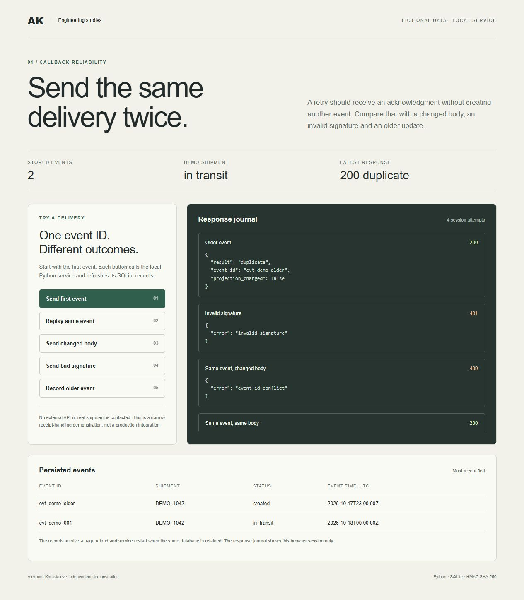

Python API study
A retried webhook should never count twice.
Webhook senders retry when a reply is slow or lost. I built a small Python service that checks each signed delivery, stores every event ID once and refuses an old ID that arrives with different content. The receipt and the shipment update are saved in one SQLite transaction, so they can't drift apart.
- unit and HTTP tests pass
- 32
- delivery cases replayed against the service
- 5
- concurrent copies of one event, stored once
- 24
- receipts kept across a service restart
- 2
The problem
Duplicates are normal. Silent damage isn't.
A sender that doesn't get a clear reply sends the same event again. If the receiver treats each copy as new, the same shipment update runs twice. If it saves the event and then crashes before updating the shipment, the two records disagree. A reused ID with a different body is worse, because it means one side has changed history.
Signature, time window and schema
An HMAC SHA-256 signature over the timestamp and exact body, a five-minute delivery window and a fixed JSON schema. Duplicate JSON keys, bad dates and bodies over 64 KB are refused.
One transaction per receipt
The event row and the shipment's latest state are written together. An identical retry gets a duplicate acknowledgment. Changed content under a known ID gets a 409 and changes nothing.
Older events don't roll state back
An older event is kept as its own receipt, but the shipment keeps the newest status. Events with an equal time keep the first projection.
Recorded responses
Same event ID, five different outcomes.
I started the service from the published ZIP with a new database and sent its five demo deliveries in order, reading the stored state after each one. Then I stopped it, started it again on the same database and replayed the first event.
| Delivery | HTTP | Response body | Stored events | Shipment status |
|---|---|---|---|---|
| First deliveryevt_demo_001, in_transit | 200 | {"result": "recorded", "event_id": "evt_demo_001", "projection_changed": true} | 1 | in_transit |
| Identical retrysame ID, same body | 200 | {"result": "duplicate", "event_id": "evt_demo_001", "projection_changed": false} | 1 | in_transit |
| Changed bodysame ID, status delivered | 409 | {"error": "event_id_conflict"} | 1 | in_transit |
| Bad signaturerefused before storage | 401 | {"error": "invalid_signature"} | 1 | in_transit |
| Older, distinct eventevt_demo_older, created | 200 | {"result": "recorded", "event_id": "evt_demo_older", "projection_changed": false} | 2 | in_transit |
| Restart, then retrysame database | 200 | {"result": "duplicate", "event_id": "evt_demo_001", "projection_changed": false} | 2 | in_transit |
The code that matters
Decide inside the transaction.
The duplicate check, the insert and the shipment update all run under BEGIN IMMEDIATE. Two copies arriving at once can't both see an empty table, which is what the 24-request concurrency test checks: one recorded, 23 duplicates.
event, event_at, digest = decode_event(body)
with self.connect() as db:
db.execute("BEGIN IMMEDIATE")
previous = db.execute("SELECT digest FROM events WHERE event_id = ?", (event["event_id"],)).fetchone()
if previous:
if previous["digest"] != digest:
raise ReceiptError(409, "event_id_conflict")
return {"result": "duplicate", "event_id": event["event_id"], "projection_changed": False}
db.execute("INSERT INTO events VALUES (?, ?, ?, ?, ?, ?)",
(event["event_id"], digest, event["shipment"], event["status"], event_at, now))
current = db.execute("SELECT latest_event_at FROM shipments WHERE shipment = ?", (event["shipment"],)).fetchone()
changed = current is None or event_at > current["latest_event_at"]
if changed:
db.execute("""INSERT INTO shipments VALUES (?, ?, ?, ?)
ON CONFLICT(shipment) DO UPDATE SET status=excluded.status,
latest_event_at=excluded.latest_event_at, latest_event_id=excluded.latest_event_id""",
(event["shipment"], event["status"], event_at, event["event_id"]))
return {"result": "recorded", "event_id": event["event_id"], "projection_changed": changed}
python -m unittest test_receipts Ran 32 tests in 0.862s OK python server.py --db runs/study.sqlite --port 8962
The tests cover the cases above plus expired and future timestamps, unknown and missing fields, duplicate JSON keys, invalid UTF-8, a deeply nested signed body, oversized bodies, cross-origin requests and unexpected hosts. I reran them from a fresh copy of the ZIP on 19 October 2026.
The local test page
Send the deliveries yourself.
The ZIP includes a small page served by the same Python process. Each button sends one fixed delivery and then reads the stored events back. This capture was taken after a restart: both events survived and replaying the first one returned a duplicate.

Where this stops
This is a study with fictional shipment events, not a client project or a production service. It shows one way to make a receiver safe to retry.
- One event namespace and one local SQLite database.
- A new signing key is generated each time the service starts.
- The five-minute window and the ordering rule are study choices.
- It doesn't make external side effects exactly-once, and it isn't connected to any provider.
How a real repair would start
I'd reproduce the failure from an anonymized event and your receiving code first. Then we'd agree the event ID contract, the retry window, the ordering rule and the checks that prove it's fixed, before touching storage or anything that calls out.